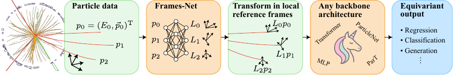

Quickstart
This page sets you up for building and running LLoCa networks.
Installation
Before using the package, install it via pip:
pip install lloca
Alternatively, if you’re developing locally:
git clone https://github.com/heidelberg-hepml/lloca.git
cd lloca
pip install -e .
Building a LLoCa-Transformer
{kind=link}
We now demonstrate how to build a LLoCa-Transformer, the most efficient architecture based on our papers. We build the LLoCa-Transformer in three steps, following the picture above:
Construct local frames based on three equivariantly predicted vectors
Transform particle features into local frames
Process local particle features with any backbone architecture
0. Generate particle data
We start by generating toy particle data, for instance for an amplitude regression task. We describe particles by a four-momentum and one scalar feature, for instance the particle type. Using random numbers, we generate a batch of 128 events with 10 particles each.
import torch
num_scalars = 1
B, N = 128, 10
mass = 1
p3 = torch.randn(B, N, 3)
E = (mass**2 + (p3**2).sum(dim=-1, keepdims=True)).sqrt()
fourmomenta = torch.cat([E, p3], dim=-1) # (128, 10, 4)
scalars = torch.randn(B, N, num_scalars) # (128, 10, 1)
1. Construct local frames based on three equivariantly predicted vectors
Given these particle features, we want to construct a local frame \(L\) for each particle. The local frames are Lorentz transformations, i.e. they satisfy \(L^TgL=g\) with \(L\in \mathbb{R}^{4\times 4}\). We further design them to satisfy the transformation behavior \(L\overset{\Lambda}{\to} L\Lambda^{-1}\) under Lorentz transformations \(\Lambda\), this ensures that particle features in the local frame are invariant.
We construct the local frames in two steps. First, we use a simple Lorentz-equivariant equivectors network, MLPVectors, to construct 3 vectors.
from lloca.equivectors.mlp import MLPVectors
def equivectors_constructor(n_vectors):
return MLPVectors(
n_vectors=n_vectors,
num_scalars=num_scalars,
hidden_channels=8,
num_layers_mlp=2,
)
# quickly test it
equivectors_test = equivectors_constructor(3)
equivectors_test.init_standardization(fourmomenta)
vectors = equivectors_test(fourmomenta, scalars) # (128, 10, 3, 4)
Next, we define the framesnet class which calls the equivectors to predict a set of vectors
and further performs the orthonormalization to construct the local frames.
In our minimal example, we use the LearnedPDFrames framesnet and
we pass the constructor as equivectors=equivectors_constructor.
from lloca.framesnet.equi_frames import LearnedPDFrames
framesnet = LearnedPDFrames(equivectors=equivectors_constructor)
framesnet.equivectors.init_standardization(fourmomenta)
frames = framesnet(fourmomenta, scalars) # (128, 10, 4, 4)
The package implements many alternative framesnet choices:
LearnedPDFrames: Construct a learned Lorentz transformation from a boost and a rotation, i.e. following a polar decomposition, with the rotation constructed using the Gram-Schmidt algorithm in the 3-dimensional euclidean space. This is the default Lorentz-equivariantframesnet.LearnedSO13Frames: Construct a learned Lorentz transformation directly using the Gram-Schmidt algorithm in Minkowski space. The result is equivalent toLearnedPDFrames, butLearnedPDFrameshas the advantage of providing direct access to the boost, which is useful in some cases.LearnedSO3FramesandLearnedSO2Frames: Construct learned \(SO(2)\) and \(SO(3)\) transformations, embedded in the Lorentz group. The resulting architectures are \(SO(2)\)- and \(SO(3)\)-equivariant, respectively.RandomFrames: Random global frames, corresponding to data augmentation.IdentityFrames: Frames from identity transforms, corresponding to the baseline non-equivariant architectures.
2. Transform particle features into local frames
Once the frames are constructed, we have to transform the particle features into their local frames. We use the local frames transformation for the four-momenta, whereas the scalar features are already invariant by definition.
from lloca.reps.tensorreps_transform import TensorReps, TensorRepsTransform
fourmomenta_rep = TensorReps("1x1n")
trafo_fourmomenta = TensorRepsTransform(fourmomenta_rep)
fourmomenta_local = trafo_fourmomenta(fourmomenta, frames) # (128, 10, 4)
features_local = torch.cat([fourmomenta_local, scalars], dim=-1) # (128, 10, 5)
The lloca package implements arbitrary Lorentz tensors through the TensorReps class,
and their transformation behavior with TensorRepsTransform.
We denote 0n for scalar, 1n for vector, 2n for rank 2 tensor, and so on,
where the n stands for normal in contrast to parity-odd (not fully supported).
General representations can be obtained by linear combinations of these fundamentals, e.g. 4x0n+8x1n+3x2n+2x3n.
3. Process local particle features with any backbone architecture
Given the particle features in the local frame, we can process them with any backbone architecture without violating Lorentz-equivariance. To obtain an equivariant prediction, we have to finally transform the output features from the local into the global frames, however this step is trivial if the output features are scalar.
There is one caveat regarding the backbone architecture:
To allow a meaningful message-passing, we have to properly transform particle features when they are communicated between particles.
This manifests in a modification of the attention mechanism for transformers, and in the message-passing for graph networks.
This aspect is already implemented in the backbones available in lloca/backbone/, and has to be added for new backbone architectures within LLoCa.
This is already handled internally for the LLoCa Transformer and other architectures in lloca/backbone/
from lloca.backbone.transformer import Transformer
backbone = Transformer(
in_channels=4+num_scalars,
attn_reps="4x0n+1x1n",
out_channels=1,
num_blocks=2,
num_heads=2,
)
out = backbone(features_local, frames) # (128, 10, 1)
Next steps
Have a look at the API Reference
Consider using the orthogonal approach of Lorentz-equivariance through specialized layers, e.g. L-GATr. See LLoCa vs L-GATr for a discussion, and the L-GATr docs.
Instructions on how to Make any network Lorentz-equivariant
Custom Attention Backends (L-GATr docs)
How to implement Lorentz Symmetry Breaking (L-GATr docs)